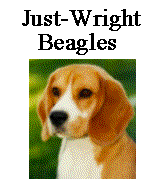
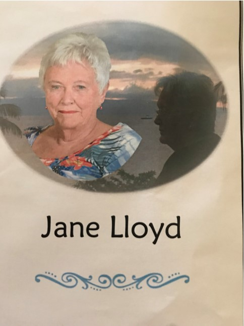
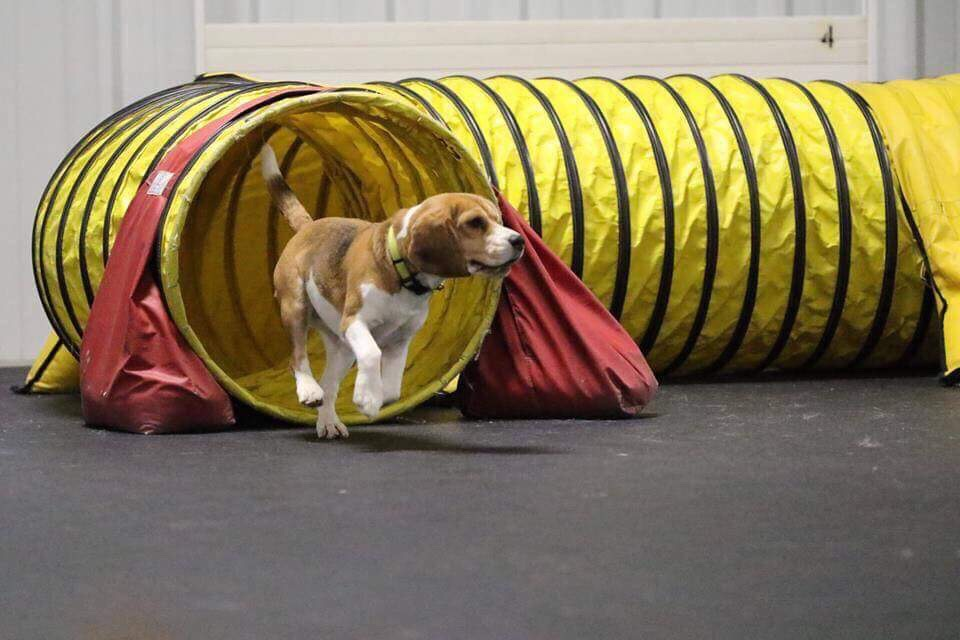

Just-Wright Beagles - founder and original President of the American Beagle Rescue Fund

Dan Milke
In memory of Julie Wright.
You have made such a difference in so many lives. There are no words to to express the void that is left. Every time I look at my special boy Mason I will think of you and be grateful. Rest peacefully Julie. You will forever be in our hearts and our memories.
Trisha Till
Deb Wigal
In memory of Julie Wright.
Deb Wigal, DVM, Top Shelf Beagles, GCH MACH 4 Just-Wright Dirty Martini MXJ, MX, MF, CAA, and Just-Wright Colors Fly at Top Shelf.
Kerry Schultz
Susan Davis
Petz Place
Elaine and Al Leiher

Jane Lloyd (Terwillegar Beagles) was involved in raising and showing beagles for more than 50 years in Canada and the United States. Although many of Jane’s beagles, known as Terwillegar Beagles became leading show dogs, more importantly they became members of dozens of families. Her care for her Beagles and the families they were placed with resulted in a network of friends who also became addicted to these loveable, family pets. Jane joined her family of beagles in heaven earlier this year, so please donate to the Beagle rescue in Jane’s memory to help continue her passion of providing homes for these wonderful pets.
In Memoriam
Gretchen Milke

Annette Didier
Bill and Mary Fleisher